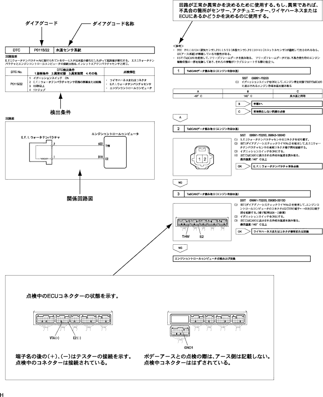

How to Troubleshoot ECU Controlled Systems Inspection Flow by DTC System
Print
Inspection Flow by DTC / System
How to read and use each page is shown below.
Troubleshooting shows procedures by DTC, by system and by symptom, to make it easier to diagnose the malfunction condition and identify the cause.
Troubleshooting procedures are summarized under [DTC], [Circuit Description], [Detection Conditions], [Wiring Diagram] and [Inspection Procedure].
